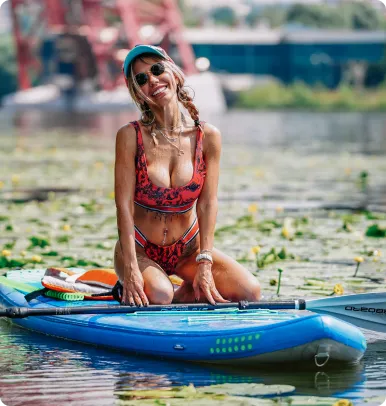
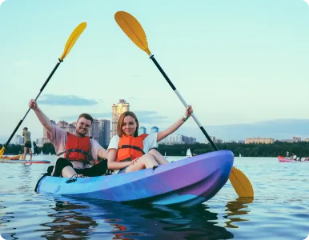
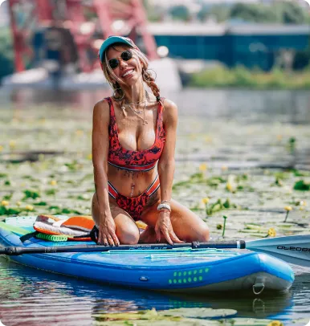
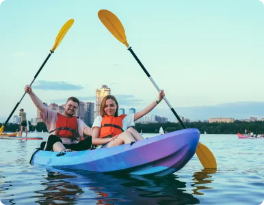
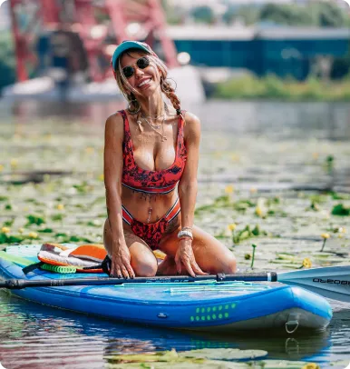
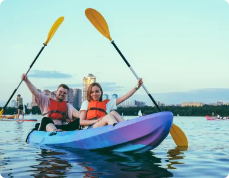
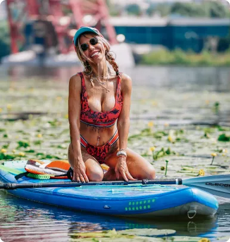
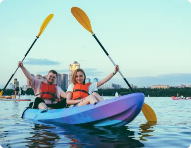

Галерея
 





Команда наших инструкторов состоит из профессионалов – людей, которые искренне любят свое дело, популяризируют sup культуру и имеют огромный опыт во многих направлениях экстремального спорта.
Главная цель команды Sup Outdoor – это создание дружеской атмосферы, в которой будет комфортно абсолютно всем нашим гостям! Мы стараемся, чтобы Вы получили положительные эмоции, заряд позитивной энергии и обязательно пришли к нам снова!
Мы предоставляем лучший сервис, лучшее оборудование, создаем интересные маршруты, программы и активности. В SUP OUTDOOR мы проживаем все моменты вместе с вами, это помогает команде улучшать то, что уже создано и придумывать новое.
Выбирая клуб Sup Outdoor вы открываете дверь в мир приключений и путешествий, ведь сап это не только короткие прогулки по реке, этот мир гораздо больше, позвольте быть вашими проводниками!
Читать отзывы о насИнструкторы сап клуба Sup Outdoor невероятно доброжелательны, и всегда готовы помочь и действием, и советом, ведь нам важен каждый наш клиент. Мы сделаем все, чтобы ваша сап/каяк прогулка или авторский сап тур с нами были максимально приятными, безопасными и незабываемыми.
Наш клуб возник в таком далеком 2016 году, когда сапбординг еще не был столь популярным! Это было сообщество людей, которых объединяла любовь к доске с веслом во всех ее проявлениях: путешествия, хобби, спорт, приключения. Своей любовью мы захотели поделиться с каждым, так и возник клуб Sup Outdoor. Именно клуб, а не станция проката. Для команды Sup Outdoor крайне важно передать частичку нашей любви, нашего мировоззрения, погрузить вас в безграничный мир досок и воды, на нашем примере показать насколько это интересно и многогранно.

